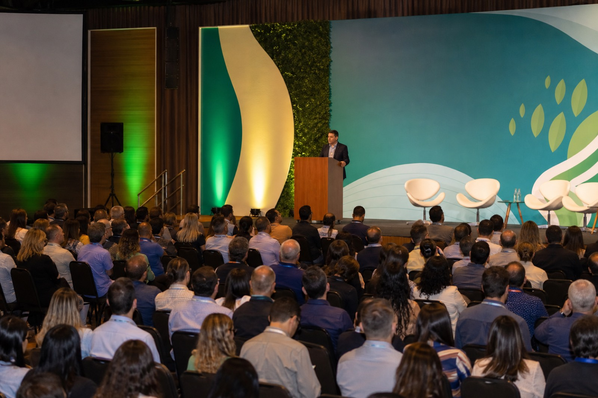
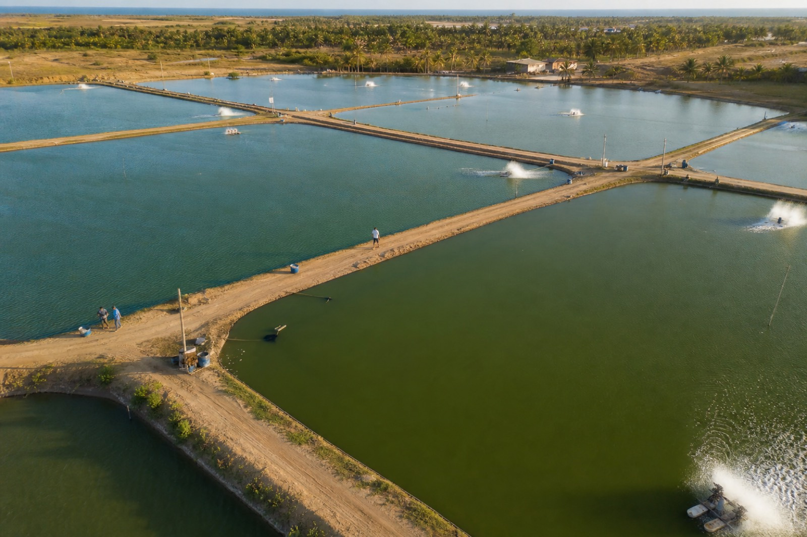
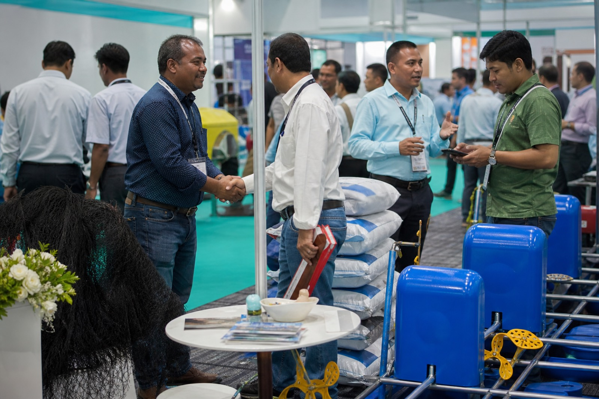
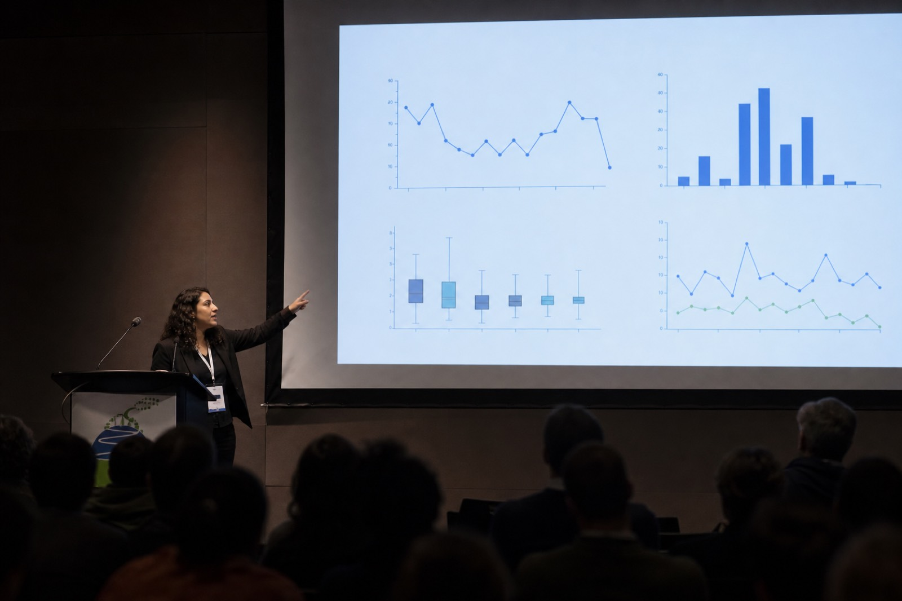
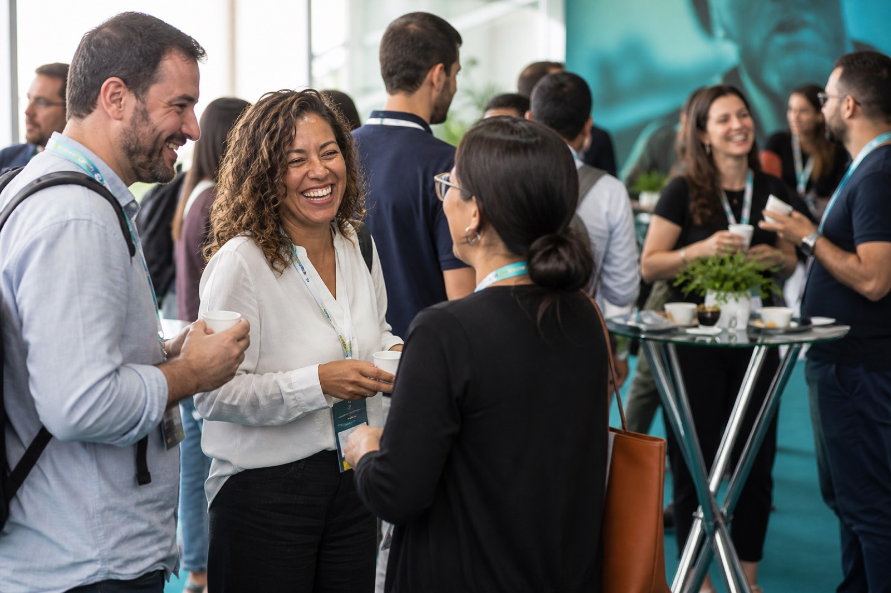
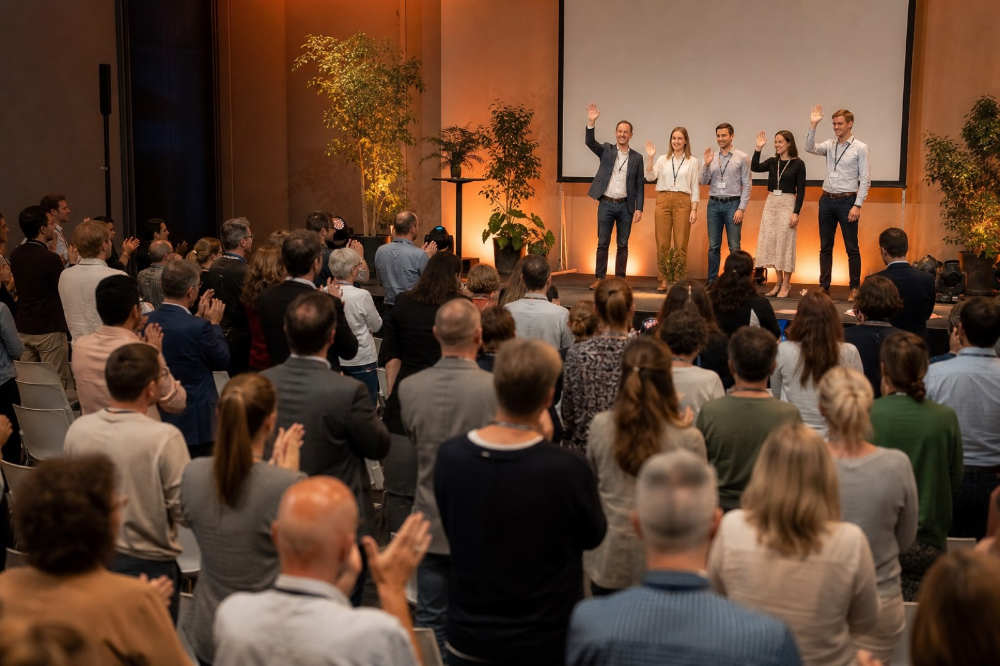

Manejo de água em viveiros
Slides da Dra. Helena Vasconcelos e gravação da sessão.
Obrigado por participar
Reveja a feira de negócios, as palestras e baixe os slides e as gravações.






Slides da Dra. Helena Vasconcelos e gravação da sessão.
Material do Dr. André Cavalcanti sobre arraçoamento e conversão.
Apresentação do Prof. Ricardo Nunes sobre fundo de viveiro.
Sensores, automação e cases apresentados no segundo dia.